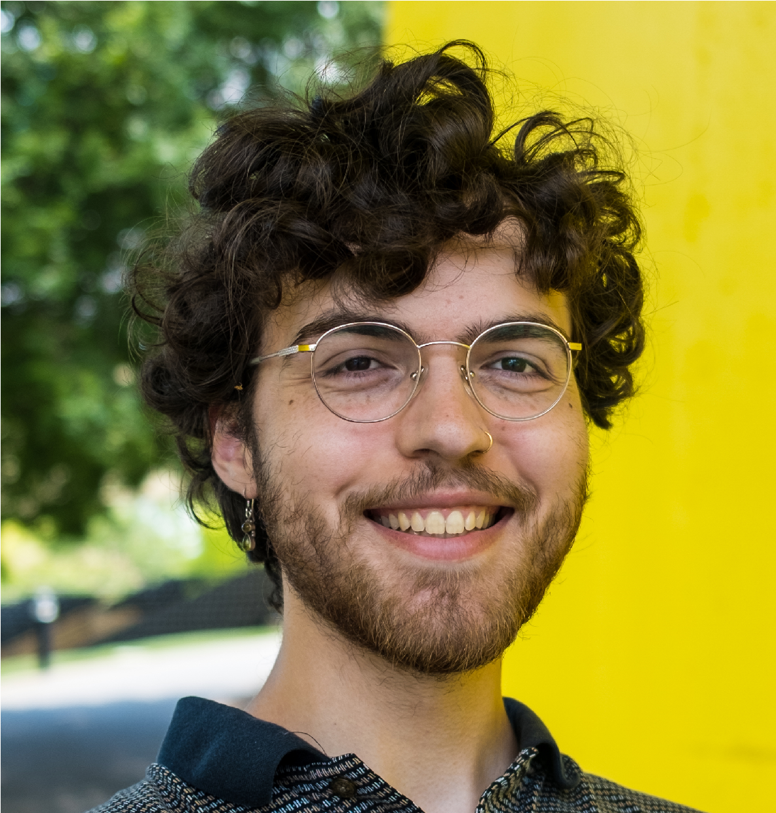

<div style="text-align: center;"></div> 

I'm [Riley](https://www.linkedin.com/in/rtavasso/), a new grad with a Masters in engineering from the University of Tennessee. Since graduating,
I've moved to San Diego and am looking for a position leveraging machine learning and a data science toolkit. I've got hands-on experience wrangling data, doing EDA,
and building high-performing state of the art models. I love deep learning and doing what was thought to be impossible. I want to contribute to ML, 
to advance our understanding of intellgience, and one day be a part of the team that creates AGI. If you're driven by the same goals and looking for a new addition to
your team, please reach out!

<!--  -->

# Posts
